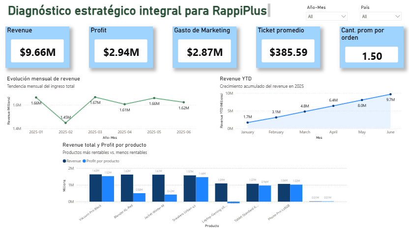
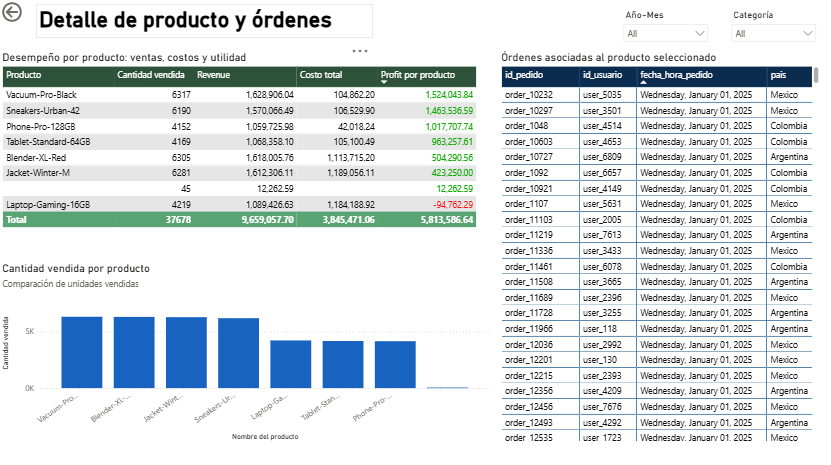

Proyecto RappiPlus: De datos a decisiones de negocio
Análisis end-to-end del servicio de suscripción RappiPlus enfocado en evaluar
comportamiento de usuarios, rentabilidad y eficiencia del funnel. El proyecto
integra Python, SQL y técnicas estadísticas para transformar datos en decisiones
de negocio accionables.
Python | SQL | A/B Testing | Data cleaning | Funnel analysis | Cohort analysis | Dashboarding
Objetivo del proyecto
Evaluar el desempeño del servicio RappiPlus analizando ingresos, comportamiento
de usuarios y eficiencia del proceso de compra para identificar oportunidades
de crecimiento y mejora.
Problemas de negocio a resolver
- Determinar si el modelo de suscripción es rentable.
- Identificar en qué etapas del funnel se pierden usuarios.
- Analizar si los usuarios regresan y generan valor en el tiempo.
- Evaluar si los cambios en producto generan impacto real.
- Traducir los resultados en insights para la toma de decisiones.
Metodología
-
Preparación de datos (Python): limpieza, validación y
estructuración de datasets (pedidos, catálogo y marketing).
-
Análisis de rentabilidad: cálculo de KPIs clave
(Revenue, Cost, Profit) e identificación de segmentos rentables.
-
Funnel de conversión (SQL): análisis del recorrido del
usuario para detectar puntos de abandono.
-
Análisis de cohortes (SQL): evaluación de retención y
comportamiento en el tiempo.
-
A/B Testing (Python): evaluación del impacto de cambios
en producto mediante pruebas estadísticas.
-
Dashboarding: comunicación de insights mediante visualización.
Principales resultados
1. Calidad de los datos
Se generaron datasets limpios y estructurados que permitieron un análisis confiable del negocio.
2. Rentabilidad del modelo
Se identificaron KPIs clave para evaluar ingresos, costos y ganancias, así como segmentos con mayor contribución económica.
3. Pérdida de usuarios en el funnel
El análisis del funnel permitió detectar etapas críticas con alto abandono de usuarios.
4. Retención de usuarios
El análisis de cohortes reveló patrones de comportamiento en la repetición de uso del servicio.
5. Impacto de cambios en producto
A través de pruebas A/B se evaluó el impacto de modificaciones en el proceso de compra.
El proyecto permitió identificar oportunidades claras para mejorar conversión, retención y rentabilidad.
Conclusión
El análisis integral permitió entender el desempeño del servicio desde la adquisición
hasta la retención, generando evidencia para optimizar la experiencia del usuario y
maximizar el valor del negocio.
Recomendaciones
- Optimizar etapas del funnel con mayor abandono.
- Implementar estrategias para mejorar retención de usuarios.
- Priorizar segmentos con mayor rentabilidad.
- Validar cambios mediante experimentación continua (A/B testing).
Visualizaciones clave
1. Funnel de conversión
Representación del recorrido del usuario y puntos de abandono.
2. Análisis de cohortes
Visualización de retención de usuarios a lo largo del tiempo.
3. KPIs de negocio
Métricas clave de ingresos, costos y rentabilidad.


Valor profesional del proyecto
- Desarrollo de análisis end-to-end desde datos hasta decisiones.
- Aplicación de Python, SQL y estadística en un mismo proyecto.
- Evaluación de producto mediante A/B testing.
- Enfoque en negocio: conversión, retención y rentabilidad.
Movilidad urbana y productividad económica en ciudades de LATAM
En este proyecto se analizó la relación entre congestión vehicular y productividad económica en
ciudades de Latinoamérica durante 2024. Mediante limpieza de datos y análisis exploratorio, se
identificó que no existe una relación directa entre estas variables, permitiendo detectar
oportunidades estratégicas para la inversión en infraestructura de transporte.
JUPYTER | PANDAS | NUMPY | SEABORN | MATPLOTLIB.PYPLOT | LIMPIEZA DE DATOS |
TRANSFORMACIÓN DE DATOS | ANÁLISIS EXPLORATORIO | VISUALIZACIÓN
Problemas a resolver
- Identificar ciudades con alta congestión y baja productividad económica.
- Detectar ciudades con mejor desempeño combinado entre movilidad y economía.
- Analizar qué variables influyen en el desarrollo urbano y eficiencia de las ciudades.
Metodología
- Preprocesamiento:
- Limpieza y estandarización de datos
- Conversión de variables a formato consistente
- Integración de datasets (tráfico y economía) mediante unión INNER
- Análisis:
- Agregación de datos por ciudad-año
- Exploración de distribuciones y valores atípicos
- Evaluación visual de posibles relaciones entre variables
Principales resultados
1. Relación entre congestión y productividad
No se encontró una relación directa entre PIB per cápita y congestión.
- Ciudades con alto PIB presentan tanto alta como baja congestión
- Ciudades con menor PIB también muestran comportamientos mixtos
👉 Esto indica que la congestión no depende únicamente del nivel económico.
2. Identificación de patrones urbanos
Se identificaron diferentes perfiles de ciudades:
- Alta congestión + alto PIB (alto costo de ineficiencia)
- Baja congestión + alto PIB (mayor eficiencia urbana)
- Baja congestión + bajo PIB (menor actividad económica)
Conclusión (impacto del proyecto)
El análisis demuestra que la congestión urbana no está directamente correlacionada con el nivel de
desarrollo económico, lo que implica que las decisiones de inversión deben considerar múltiples
variables. Esto permite orientar mejor la asignación de recursos hacia ciudades con mayor impacto potencial.
Recomendaciones
Priorizar inversión en ciudades con alta congestión y PIB medio-alto
Implementar soluciones de transporte público masivo (metro, BRT, trenes)
Adoptar tecnologías de gestión inteligente del tráfico
Evaluar costos económicos de la congestión para priorizar intervenciones
Incorporar variables adicionales: densidad poblacional, inversión pública, calidad del transporte
Visualizaciones clave
1. Boxplot de congestión (Jams Delay)
Análisis de distribución y detección de valores atípicos en niveles de tráfico.
2. Distribución del PIB per cápita
Evaluación de la dispersión y promedio económico por ciudad.
3. Comparación: Congestión vs PIB
Relación visual entre ambas variables para identificar patrones urbanos.
Este proyecto demuestra capacidad para:
- Integrar múltiples fuentes de datos
- Analizar relaciones complejas entre variables económicas y urbanas
- Traducir datos en recomendaciones de política e inversión
- Comunicar hallazgos mediante visualización efectiva
Análisis de datos operativos para optimizar recursos
En este proyecto analicé datos de calidad de soluble, mantenimiento y disposición para
identificar desperdicio y fugas en procesos de maquinado. A través de técnicas de limpieza,
análisis exploratorio y modelado, se detectaron oportunidades de recuperación del recurso,
logrando reducir costos operativos y mejorar la sostenibilidad del proceso.
EXCEL | POWER BI | RECOLECCIÓN DE DATOS | LIMPIEZA DE DATOS |
TRANSFORMACIÓN DE DATOS | ANÁLISIS EXPLORATORIO | VISUALIZACIÓN
Problemas de negocio a resolver
- Determinar qué parámetros de calidad del soluble permiten su reciclaje.
- Identificar la proporción de soluble que se dispone sin tratamiento previo.
- Detectar prácticas operativas que generan desperdicio innecesario.
- Estimar el ahorro potencial al recuperar soluble mediante filtración o reciclaje.
Metodología
- Recolección de datos:
Datos obtenidos de registros físicos en planta:
- Calidad del soluble
- Mantenimientos predictivos y correctivos
- Manifiestos de disposición
- Preprocesamiento:
- Limpieza y estandarización de datos
- Eliminación de inconsistencias
- Verificación de duplicados
- Análisis y modelado:
- Análisis esploratorio (EDA):evaluación de patrones de calidad y consumo
- Modelado predictivo: estimación de ahorro potencial mediante simulación y regresión
- Clustering: clasificación del soluble según su nivel de contaminación
Principales resultados
1. Factores críticos de contaminación
Se identificó que la contaminación del soluble está relacionada principalmente con prácticas operativas, como:
- Presencia de basura
- Residuos de desengrasante
- Materiales ajenos al proceso
👉 Esto acelera la degradación del soluble y aumenta su disposición.
2. Impacto de fugas en el consumo
- Máquinas con historial de fugas presentan mayor consumo de soluble
- Existe mayor variabilidad en la concentración del fluido
👉 Las fugas son un factor clave en el desperdicio del recurso.
3. Oportunidad de recuperación
- Parte significativa del soluble puede recuperarse mediante filtración o separación
- Existe potencial de reducción en costos de compra y disposición
4. Relación entre mantenimiento y eficiencia
Máquinas con mantenimiento predictivo constante tienen:
- Menor variabilidad en calidad
- Menor volumen de disposición
👉 El mantenimiento impacta directamente la eficiencia operativa.
Conclusión (impacto del proyecto)
El análisis permitió identificar oportunidades claras para reducir desperdicios y costos asociados
al uso del soluble. La implementación de estrategias de reciclaje y mejora operativa puede generar
ahorros significativos y contribuir a procesos más sostenibles.
Recomendaciones
Estandarizar prácticas de limpieza para reducir contaminación
Implementar sistemas de reciclaje (filtración, centrífugas, separación de aceites)
Priorizar mantenimiento predictivo en máquinas críticas
Monitorear indicadores clave:
- pH
- concentración
- conductividad
- % de contaminación
- volumen dispuesto por máquina
Visualizaciones clave
1. Parámetros de calidad por sección
Análisis de concentración y pH que permitió identificar desviaciones y deterioro del soluble.
2. Volumen de disposición por máquina
Identificación de equipos con mayor desperdicio y posibles causas.
3. Tipos de contaminación
Clasificación de contaminantes para definir estrategias específicas de recuperación.
4. Distribución de mantenimiento
Comparación entre mantenimiento predictivo y correctivo para evaluar impacto en desempeño.
Este proyecto demuestra capacidad para:
- Analizar datos operativos complejos
- Traducir datos en decisiones de negocio
- Identificar oportunidades de ahorro
- Integrar análisis técnico con impacto real en costos y sostenibilidad